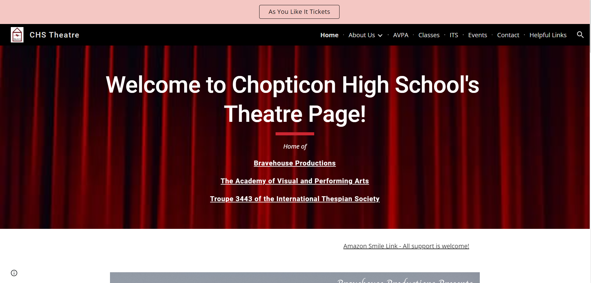
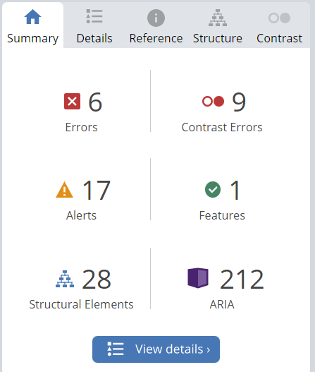
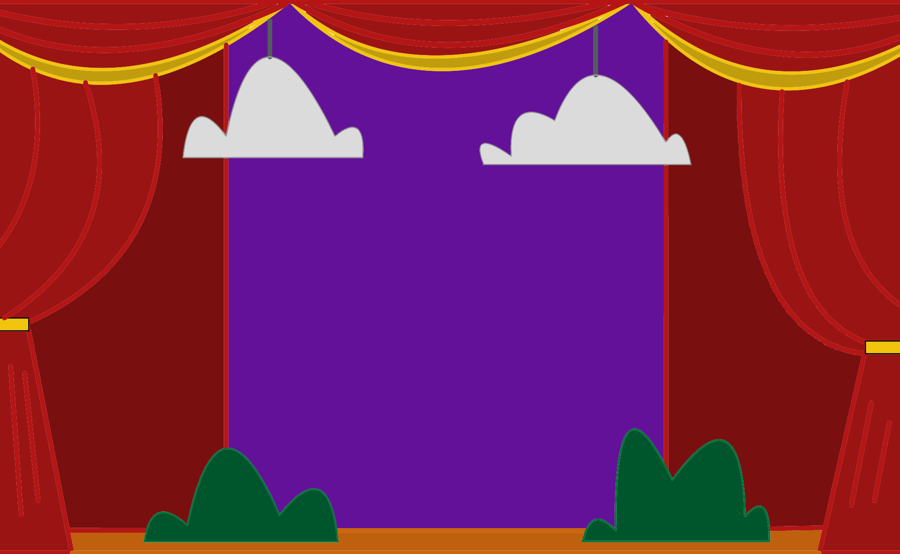
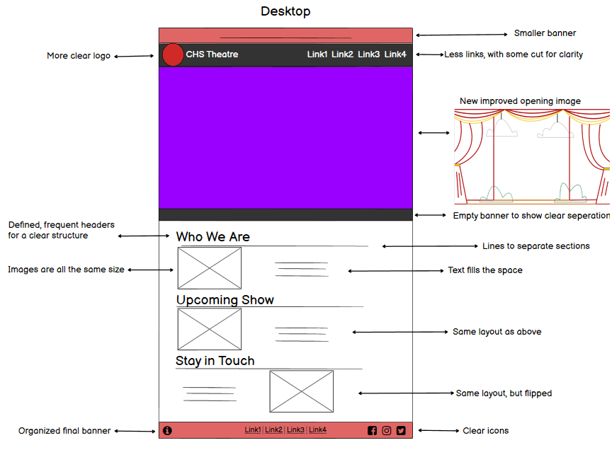
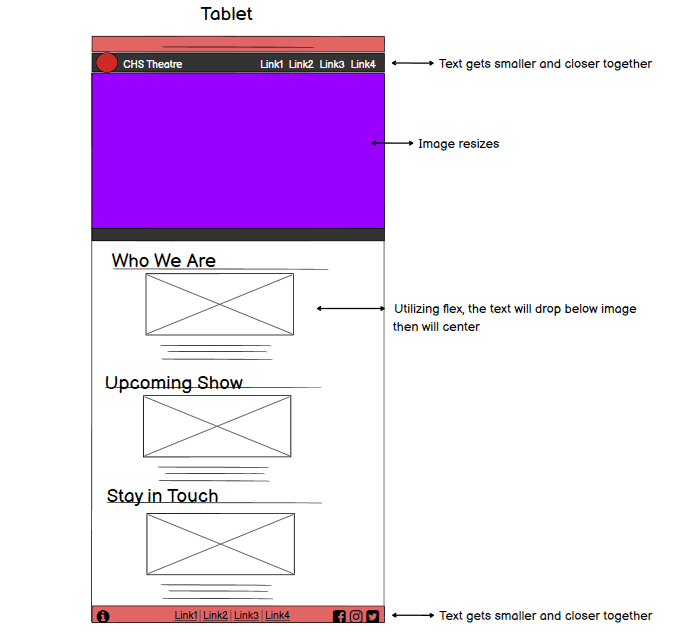
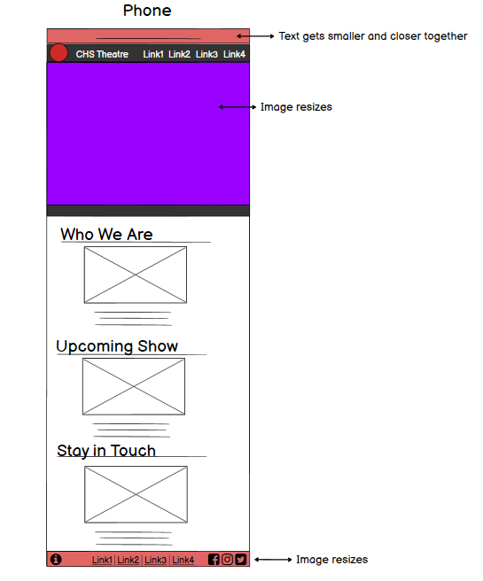
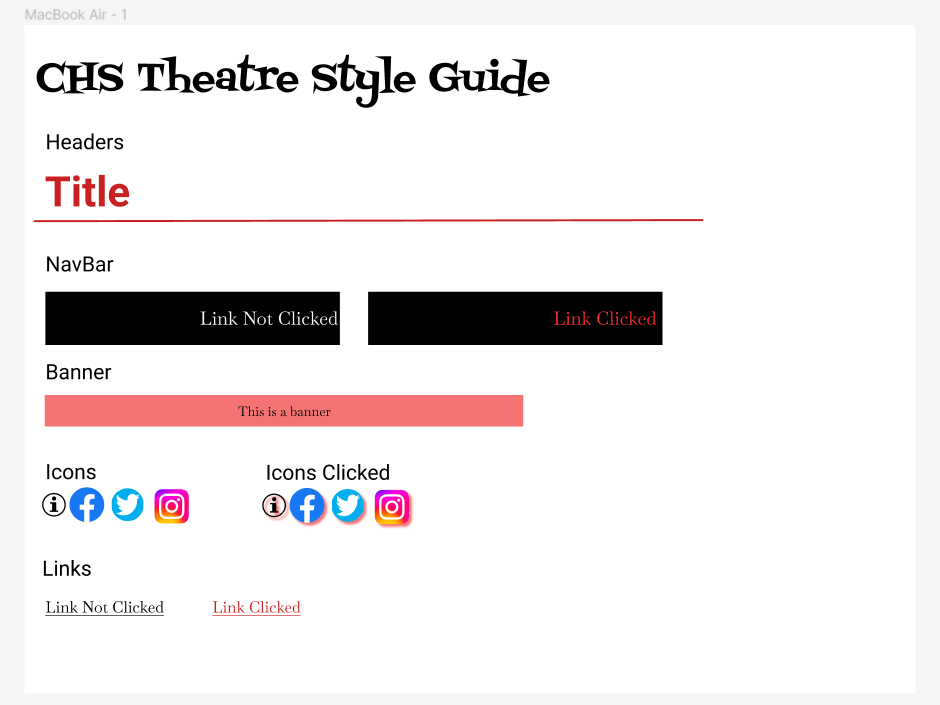
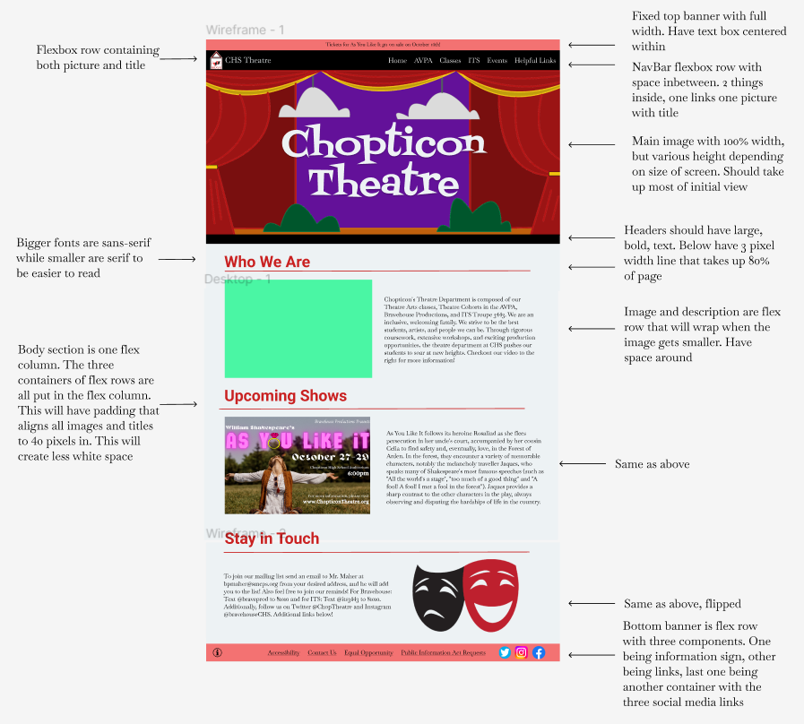
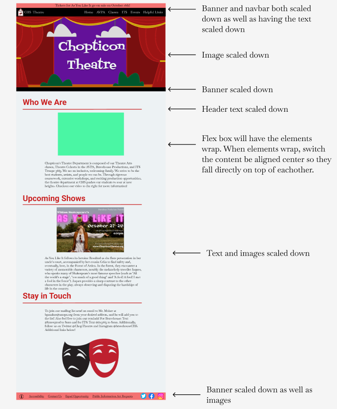
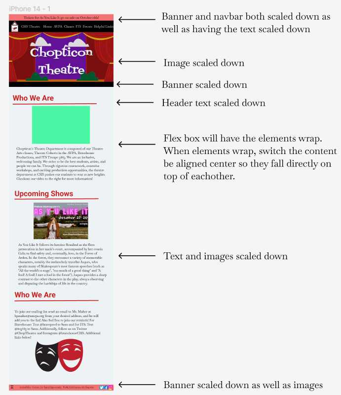

When thinking about poorly designed websites, the first thing that came to mind was my old high school theatre
page. Shown near, the page was both chaotic yet bland and very
confusing to use. So, I embarked on my journey back to high school to fix this horrid website! Please note,
the website's top banner changed to a button after I had already finished designing.

The Investigation
The first step in redesigning a website is to identify its problems! In UI/UX we can identify problems using
the three design criteria: usability, learnability, and memorability. Below you will find the problems I
identified.
Usability:
Hierarchy: The website has very little structure. When you scroll down you are greeted with a massive
picture of a poster that has no context, followed by random videos and misplaced links. The website is in
desperate need of a consistent format.
Blank Space: Due to the lack of layout, the website has a lot of blank space which could be better
utilized.
Inefficient links: The website has a very cluttered navigation bar, with some of the same links being
throughout the website.
Low-res Images: A lot of the images were very poor quality.
Learnability:
Lack of Story: While the website has a about us section and a video, these sections can be hard to
navigate to. A better story would leave users more engaged.
Unclear Structure: The cluttered structure of the page makes it unclear where things would be on the
website.
Memorability:
Lack of icons: Links such as the social media ones could benefit from familiar icons which users know.
Unclear Links: The website could do a better job of having the links change when being clicked to
provide good feedback.
Other:
Proposed Organization: I believe that the intro video can be paired with the about us section. The new
show deserves its own defined section. Finally the ways to keep updated could all fit into one section.
Finally, I believe everything else is not important enough for the front page.
Boring header image: While a more personal nitpick, the red curtains do not leave the website having a
personal feel.
Accessibility
The website was also incredibly inaccessible. While everyone can benefit from a better hierarchy, someone who
is visually impaired who uses a screen reader would not be guided well through the website. Additionally, alt
text was hardly anywhere to be found. This is extremely problematic for a website that utilizes posters to give
information, as words on an image can not be read off a screen reader! The page also had plenty of broken and
duplicate links. The image to the right shows how many errors appeared on the page when assessed with
accessibility software.

A Creative Interlude
I was personally unsatisfied with the red curtain image and could not find a replacement. I wanted an image
that really felt uniquely Bravehouse and had a school theatre vibe. So, I took it upon myself to draw a new
background myself. As I am no artist, the image is not perfect and would ideally be professionally redone.
However, I believe it captures the exact vibe I was going for.

The First Low-Fidelity Prototypes
Before we design the website, we need to sketch out some prototypes. The goal of these prototypes is to
address the problems outlined early. Annotations from the leftmost picture apply to all others unless specified
otherwise.



High-Fidelity Prototyping
Next it was time to design the more realistic prototypes. Firstly though we need to create a style guide that
would allow us to keep the style consistent throughout. Then it was time to design the website. A High-fidelity
prototype should be nearly identical to the final website.You can view the designs below!




Final Redesign
Here is a snapshot of the live redesigned website, but please check it out here! The website uses responsive
design, so feel free to view the website from different devices!